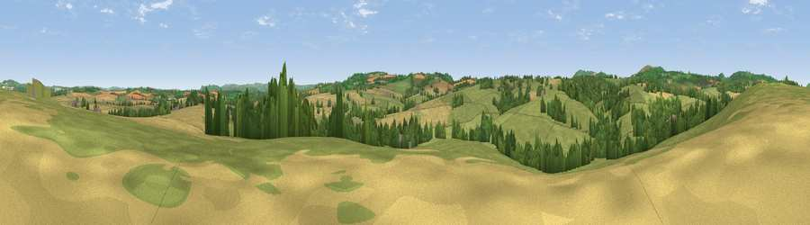

Viewpoint near St Weonards
#26920 in England · top 60% of its area beats it · near St WeonardsWhere it is
The exact computed spot (SO 49775 23075). Click the marker for map links.
The view, rendered

A 360° render of this exact spot computed from the terrain model, tree cover and land cover — summer colours, afternoon light, calibrated against photographs of famous viewpoints. Real trees, hedges and buildings will differ in detail.
The panorama
Grey silhouette: terrain skyline in each direction (720 bearings, Earth curvature and refraction included). Dashed green: skyline with trees (+15 m) and buildings (+8 m) as obstacles. Blue strip: how far the ground is visible on each bearing.
Where the view opens
Wedge length = distance to the farthest visible ground on that bearing (vegetation-aware). Rings at 10, 25 and 50 km.
What fills the view
60% grassland · 26% cropland · 13% woodland ·
Angular shares of the visible panorama (visual magnitude), not map area. Landscape diversity 0.43 (0–1 Shannon).
Key numbers
More beautiful places nearby
The staircase of upgrades: each row has a higher view potential than everything closer. Driving times are estimates from straight-line distance, calibrated against real road routing — check an actual route before setting out.
| Place | Direction | Drive | Score |
|---|---|---|---|
| Viewpoint near Garway | W · 2 km | ~6 min | 46.5 |
| Viewpoint near Welsh Newton | S · 4 km | ~8 min | 65.9 |
| Viewpoint near Llangrove | SSE · 5 km | ~11 min | 68.2 |
| Viewpoint near Garway | WNW · 5 km | ~11 min | 75.5 |
| Skenchill | SSW · 5 km | ~11 min | 75.8 |
| Viewpoint near Orcop Hill | NNW · 6 km | ~13 min | 79.9 |
| Viewpoint near Orcop Hill | NNW · 6 km | ~13 min | 80.7 |
| Garway Hill | WNW · 6 km | ~14 min | 84.6 |
51.90394, -2.73143 · source: screening · position refined by local search. Computed location — check access rights before visiting.